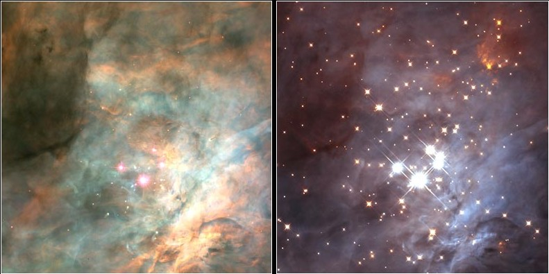

Magnitude 4.0. Located just south of Orion's Belt. Visible to the naked eye.
About 1,350 ly away. 24 ly in diameter. The closest region of massive star formation to the earth.
Contains the Trapezium, a very young cluster of stars. Infrared shows stars are hidden by gas and dust in visible light. The following image is a comparision between images in visable and infrared light.

Approximately 700 stars in various stages of formation have been observed in M42. Hubble has observed over 150 protoplanetary disks (proplyds), stars in the very early stages of evolution.
As young massive stars form thay generate large amounts of ultra violet radiation that push away gas and dust.
Within maybe 100,000 years, most of the gas and dsut will be blown away, and what will remain will be a young star cluster.
Image Credit: NASA/ESA
Image Credit: NASA